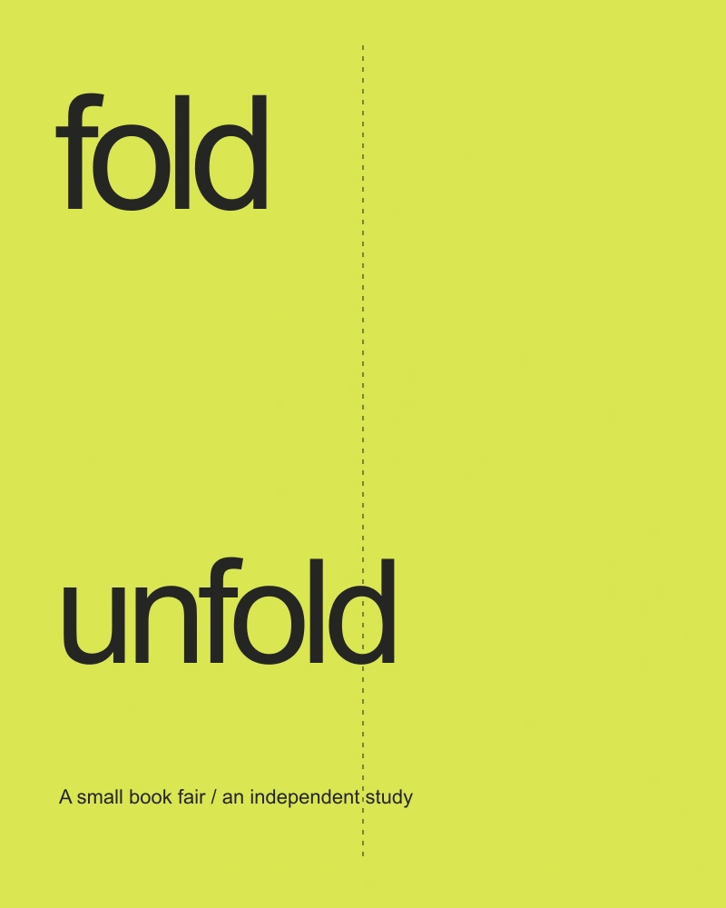
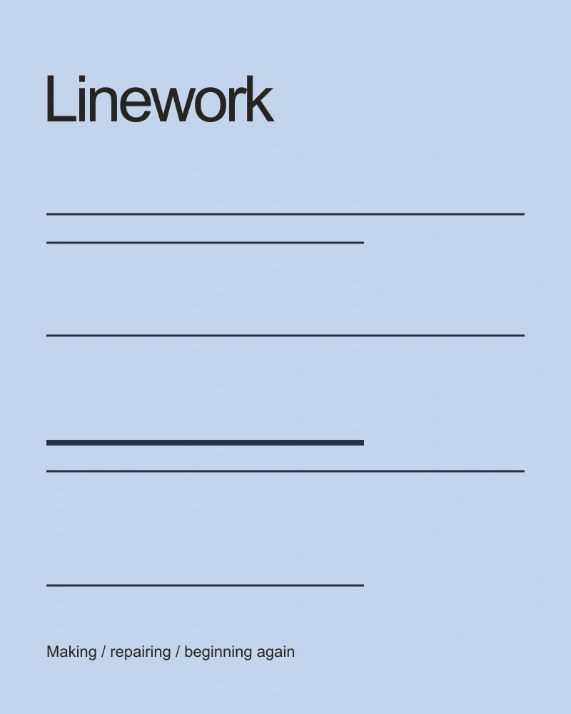
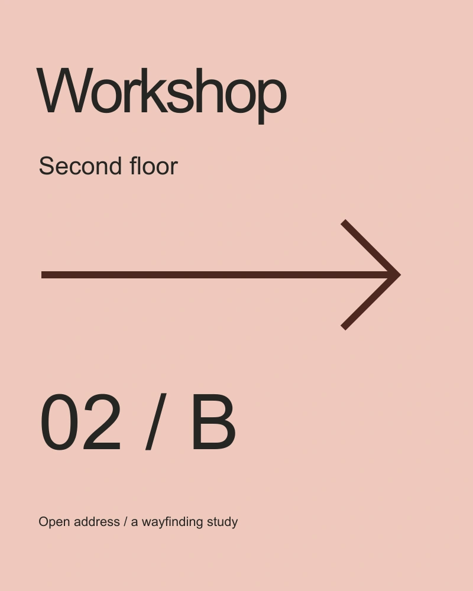

Fold / unfold
Printed identity / 2026
A small selection of independent studies in print, editorial systems and wayfinding. I’m interested in a line that does more than decorate a page.

Printed identity / 2026

Editorial system / 2025

Wayfinding study / 2024
These are original self-initiated concepts. Each case follows a graphic idea into its use, its production questions, and the things that remain untested.